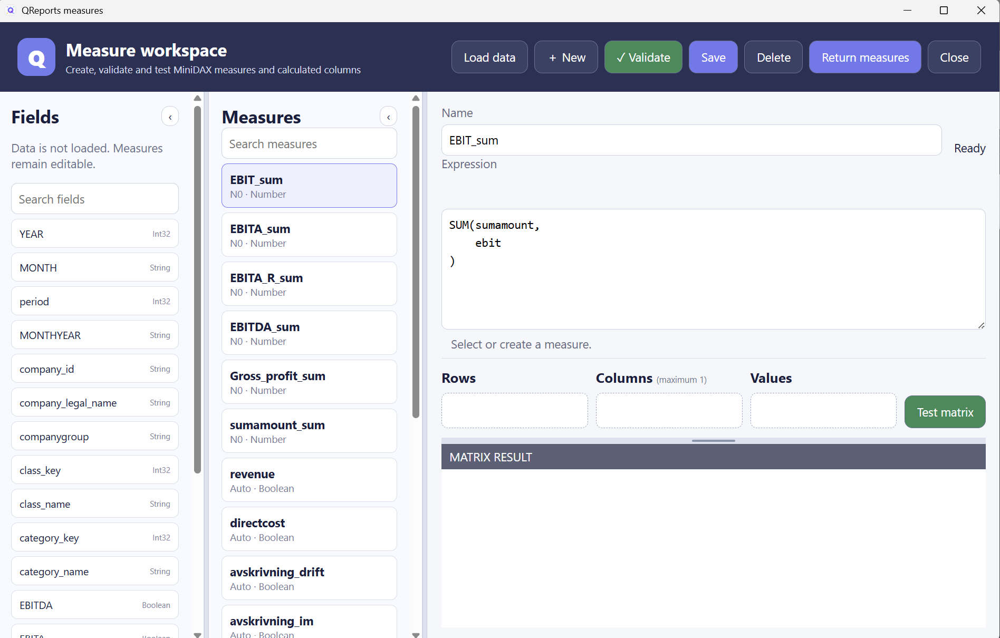

Mini DAX and measures
Mini DAX is QReports' focused expression engine for measures and calculated columns. It is used by matrices, charts, Canvas visuals, and QReports table output. It is not the same thing as sending a full DAX query to the Excel Power Pivot model.
When Conn is model, Query Tool can run normal model queries. The formulas on this page are the smaller Mini DAX formulas managed with Dax or Tools > Define Measures.

Measure or calculated column?
| Type | Evaluation context | Typical use |
|---|---|---|
| Measure | Evaluated after dimensions and filters establish a group. | Totals, averages, ratios, prior-period values, rank. |
| Calculated column | Evaluated once for each source row before grouping. | Categories, cleaned text, date parts, row calculations. |
Calculated columns cannot reference aggregate measures and cannot call aggregate or context functions such as SUM, CALCULATE, ALL, or REMOVEFILTERS.
Basic syntax
The editor stores the output name separately from the formula. For a measure named Margin, enter:
DIVIDE(SUM(Profit), SUM(Revenue))
Mini DAX supports arithmetic, comparisons, AND, OR, variables, and comments:
VAR _revenue = SUM(Revenue)
VAR _profit = SUM(Profit)
RETURN
IF(_revenue = 0, BLANK(), DIVIDE(_profit, _revenue))
Comments begin with //. Names are matched without case sensitivity. Use Ctrl+Space or begin typing to display available names.
Aggregate functions
| Function | Syntax | Description |
|---|---|---|
SUM |
SUM(column [, filter]) |
Sum numeric values in context. |
AVERAGE / AVG |
AVERAGE(column [, filter]) |
Average numeric values. |
MIN |
MIN(column [, filter]) |
Minimum value. |
MAX |
MAX(column [, filter]) |
Maximum value. |
COUNT |
COUNT(column [, filter]) |
Count non-blank values. |
DISTINCTCOUNT |
DISTINCTCOUNT(column) |
Count distinct non-blank values. |
SELECTEDVALUE |
SELECTEDVALUE(column [, alternate]) |
Single value in context, otherwise alternate or blank. |
An optional aggregate filter is a simple row condition:
SUM(Revenue, Month = 1)
Math and ranking
| Function | Syntax | Description |
|---|---|---|
DIVIDE |
DIVIDE(numerator, denominator) |
Safe division; zero returns blank. |
ROUND |
ROUND(number, digits) |
Round halves away from zero. |
ROUNDUP |
ROUNDUP(number, digits) |
Round away from zero. |
ROUNDDOWN |
ROUNDDOWN(number, digits) |
Round towards zero. |
NEGATE / NEG |
NEGATE(number) |
Reverse the sign. |
REVERSE_SIGN |
REVERSE_SIGN(number) |
Synonym for NEGATE. |
RANK |
RANK(value [, ASC|DESC] [, DENSE|SKIP]) |
Rank the aggregated matrix values. |
RANK runs after aggregation:
RANK(Sales_total, DESC, DENSE)
Logical functions
| Function | Syntax | Description |
|---|---|---|
IF |
IF(condition, trueValue [, falseValue]) |
Return one of two expressions. |
SWITCH |
SWITCH(expression, value1, result1, ... [, else]) |
Choose from alternatives. |
BLANK |
BLANK() |
Return a blank value. |
TRUE |
TRUE() |
Logical true. |
FALSE |
FALSE() |
Logical false. |
SWITCH(
TRUE(),
Margin < 0, "Loss",
Margin < 0.1, "Low",
Margin < 0.25, "Medium",
"High"
)
Text functions
| Function | Syntax |
|---|---|
FORMAT |
FORMAT(value, "format") |
CONCATENATE |
CONCATENATE(value1, value2, ...) |
CONTAINSSTRING |
CONTAINSSTRING(text, findText) |
UPPER |
UPPER(text) |
LOWER |
LOWER(text) |
LEFT |
LEFT(text, count) |
RIGHT |
RIGHT(text, count) |
MID |
MID(text, start, count) |
MID uses a one-based start. The & operator can also concatenate text.
CONCATENATE(UPPER(Region), " - ", FORMAT(SUM(Sales), "#,##0"))
Date functions
| Function | Syntax | Description |
|---|---|---|
YEAR |
YEAR(date) |
Extract year. |
MONTH |
MONTH(date) |
Extract month. |
WEEK |
WEEK(date) |
Culture-based week number. |
TODAY |
TODAY() |
Current local date. |
DATEFROMPARTS |
DATEFROMPARTS(year, month, day) |
Construct a date. |
DATEOFFSET |
DATEOFFSET(date, years, months, days, weeks) |
Shift a date. |
Calculated-column examples:
DATEFROMPARTS(YEAR(InvoiceDate), MONTH(InvoiceDate), 1)
DATEOFFSET(InvoiceDate, -1, 0, 0, 0)
Filter context with CALCULATE
CALCULATE reevaluates a supported aggregate after changing simple column filters:
CALCULATE(SUM(Cost), Year = 2025)
Use REMOVEFILTERS or ALL inside CALCULATE to remove selected dimension filters:
VAR _currentYear = MAX(Year)
RETURN
CALCULATE(
SUM(Cost),
REMOVEFILTERS(Year),
Year = _currentYear - 1
)
Here, ALL(column) and REMOVEFILTERS(column) only remove that column's current filter inside CALCULATE; they do not return general-purpose DAX table expressions.
Parameters in formulas
QReports patches parameter tokens before compiling a formula:
CALCULATE(
SUM(Revenue),
Year = {{pyear}}
)
Use a raw numeric parameter for pyear. For text comparisons, use DAX string parsing or provide quotes through the parameter definition.
More examples
Average price
VAR _amount = SUM(Amount)
VAR _quantity = SUM(Quantity)
RETURN DIVIDE(_amount, _quantity)
Growth percentage
IF(
PriorYear = 0,
BLANK(),
DIVIDE(CurrentYear - PriorYear, PriorYear)
)
Row-level category
Create a calculated column and enter:
IF(Amount < 0, "Credit", "Debit")
Differences from full DAX
Mini DAX is intentionally smaller than Microsoft DAX:
- it evaluates QReports table/matrix data, not a semantic model with relationships;
- it is an expression engine, not the DAX query language—
EVALUATEandDEFINEbelong to model mode; - iterator and table functions such as
SUMX,FILTER,ADDCOLUMNS,SUMMARIZE, andRELATEDare not implemented; - there is no full relationship propagation or Power Pivot storage engine;
CALCULATEsupports focused column comparisons plusALL/REMOVEFILTERS, not every DAX filter expression;- time-intelligence functions such as
SAMEPERIODLASTYEAR,DATESYTD, and DAXDATEADDare not included; useDATEOFFSETand explicit filters; RANKis a QReports post-aggregation operation, notRANKX;- blanks use an internal representation and may render as empty output;
- number, week, and date formatting can depend on the current Windows culture.
If a formula requires model relationships, iterators, or advanced time intelligence, use a real Power Pivot measure instead. Query Tool's Power Pivot menu links to Excel's model tools.
Return to the Query Tool guide.